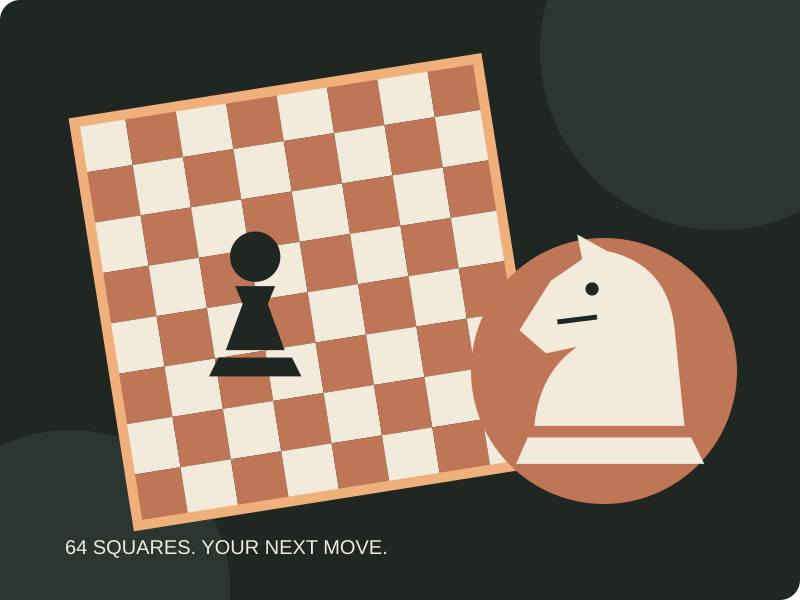
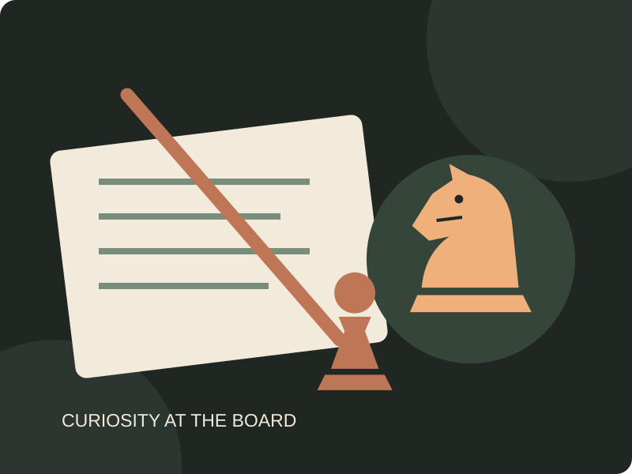
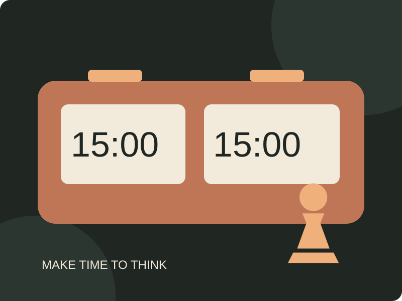
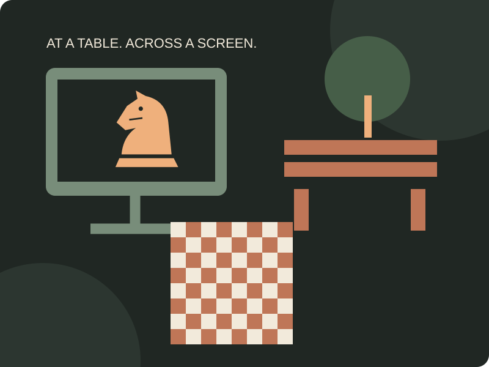
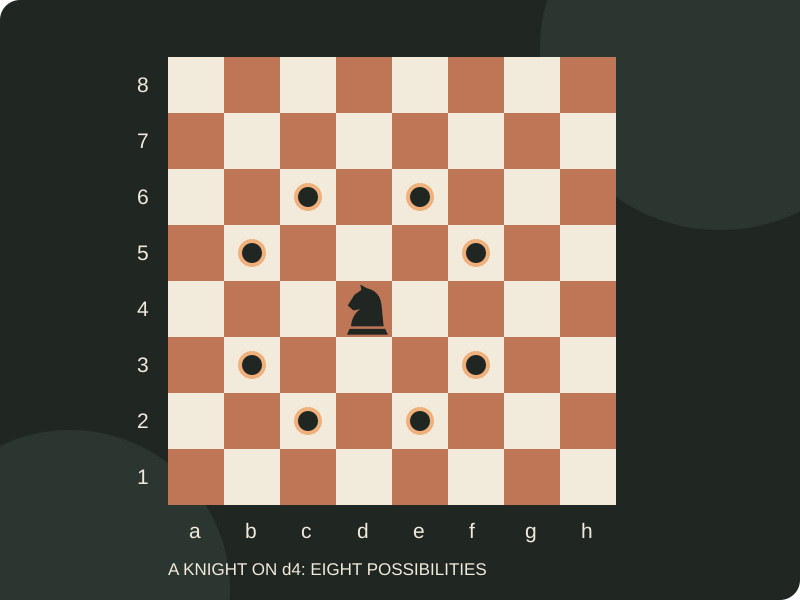
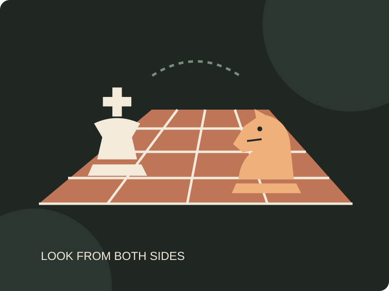
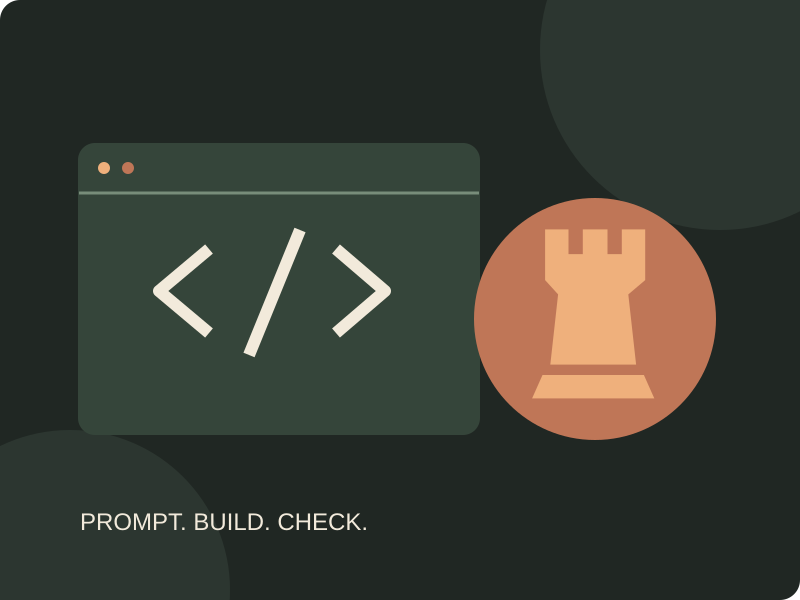

The Game of Chess

AI illustration prompt: Create an original SVG illustration of a chessboard, knight, and pawn in charcoal, cream, and terracotta. Use simple shapes and a flat editorial style.
Sixty-four squares, two players, and a new decision on every turn.
Chess is a strategy game played on an eight-by-eight board. Each player starts with sixteen pieces. White moves first, then the players take turns. The goal is checkmate: attack the opposing king so there is no legal way to escape the attack.
The rules give you a starting point. The fun comes from choosing a plan, noticing a threat, and realizing that a quiet move can matter just as much as a capture.
- Learn the pieces. Each one has a different way to move.
- Look at both sides. Your opponent gets a move too.
- Stay curious. A finished game leaves something to review.
Who Is Behind the Board?

AI illustration prompt: Draw a notebook, pencil, and chess pieces as a flat SVG illustration using the same charcoal, cream, and terracotta palette.
Hi, I'm Neelesh Reddi. Chess is one of my interests, alongside music and gaming.
I'm a third-year student at UNC Charlotte, majoring in Data Science and minoring in Software Development. I'm interested in machine learning and natural language processing, especially the challenge of making complicated information useful.
This site brings that curiosity to chess. It is a beginner-friendly introduction to the game, with ideas for getting started and making time to practice. You do not need a rating or a tournament background to explore it.
Start with the basics, try a game at a comfortable pace, and give yourself permission to make mistakes. The next position is another chance to think.
Why Spend Time With Chess? →Make Time for a Game

AI illustration prompt: Create a flat SVG chess clock with two 15:00 displays and a pawn, matching the site illustrations.
Choose a session that fits the time you actually have.
Chess can fit into a short break or a longer evening. For learning, an unrushed game gives you room to check threats before moving. Leave time afterward to revisit one position instead of immediately starting another game.
| Time Available | Try This |
|---|---|
| 5–10 minutes | Work through one or two puzzles. Explain the idea before checking the answer. |
| 30–45 minutes | Play a 15-minute-per-side game, then revisit an important decision. |
| An open evening | Play an untimed game with a friend and discuss it afterward. |
This is a sample routine, not a club schedule. With a clock, agree on the time control before starting. An increment adds time after each move, so leave extra room if you use one.
Find Your Place to Play

AI illustration prompt: Create a flat SVG scene combining an online chess screen, a park bench, and a chessboard in the established palette.
A shared table or an online board is enough to get started.
Choose a place where both players can see the board clearly and finish without feeling rushed. A quiet spot helps when you want to think through a position.
- At home: set up a board on a steady table and invite a friend to play.
- In a shared space: a study lounge or suitable library common area can work. Check the rules and keep conversations considerate.
- Outside: use a park table in comfortable weather. Bring pieces that will not blow over easily.
- Online: use Lichess to explore an online board, or start with its guided lessons.
For an in-person group, check the organizer's current meeting details before you travel. This site does not list verified club times or venues.
Explore Lichess Chess Basics ↗Make Your First Moves

AI illustration prompt: Draw an accurate 8-by-8 board with a knight on d4 and mark all eight destinations on an otherwise empty board. Label its files and ranks.
Learn how the pieces move, then build a simple thinking routine.
- Set up the board. Keep a light square at your lower-right corner. Put each queen on her own color, with the king beside her.
- Learn the movement rules. Rooks move straight; bishops move diagonally; queens combine both. Knights move in an L and can jump over pieces. Kings normally move one square. Pawns move forward but capture diagonally.
- Check before moving. Is your king safe? What did the opponent's last move threaten? Is the piece you want to move protected?
- Review one decision. After the game, find a move you were unsure about and consider another choice.
The diagram shows all eight destinations for a knight on d4 on an otherwise empty board. A knight cannot land on a friendly piece, and every move must leave your own king safe.
This is a starting guide, not the full rulebook. Learn castling, pawn promotion, en passant, checkmate, and draws through the FIDE Laws of Chess and the interactive Lichess lessons.
More Than the Result

AI illustration prompt: Draw two contrasting chess pieces across a stylized board to suggest looking at a position from both sides. Keep the flat SVG style.
The result is one part of a game. The decisions are worth coming back for.
Chess gives you a clear set of rules without telling you which plan to choose. You can follow an idea, discover its weakness, and try something different next time. That makes even a familiar position interesting.
- A satisfying puzzle: finding a move that solves two problems at once can be more memorable than a quick win.
- Another perspective: asking what your opponent wants changes how you look at the board.
- A shared experience: talking through a game afterward gives both players a chance to explain their ideas.
A useful goal for a session is simple: leave with one idea you understand better. Winning is enjoyable, but a loss can still produce a position worth studying.
Plan a Practice Session →AI Prompts

AI illustration prompt: Create a flat SVG illustration of a code window and a rook using the same palette as the chess site.
ChatGPT, accessed through Codex, helped write the HTML, embedded CSS, JavaScript, draft text, and original SVG illustrations for this site. Neelesh selected chess as the topic and supplied the personal details used in Who.
The prompts below summarize the assignment and implementation directions used during this collaboration; they are not a verbatim transcript. Each figure also records the specific illustration direction. The graphics were created as SVG code, without a separate image-generation model.
- Structure: Build a standalone chess hobby site in itis3135/hobby with embedded CSS, no includes, and seven sections: Who, What, When, Where, How, Why, and AI Prompts. Give every section at least three content items and a captioned figure.
- Design: Use charcoal, terracotta, and cream, readable typography, a chess-piece divider, and consistent flat SVG illustrations. Make it visibly different from the course website.
- Navigation: Show Home first, display one section at a time, update the title and active link, support keyboard use, and preserve browser Back and Forward behavior.
- Content: Write a concise beginner's guide. Use the supplied background for Neelesh without inventing ratings, tournament results, or personal chess history. Label the practice routine as a suggestion.
- Checks: Test section switching, mobile layout, local assets, semantic HTML, CSS, accessibility, and the course validator. Fix issues without hiding checks.
The FIDE rules and Lichess lessons linked in How provide references for learning the game. AI assistance does not replace checking those rules or reviewing this site's content before submission.